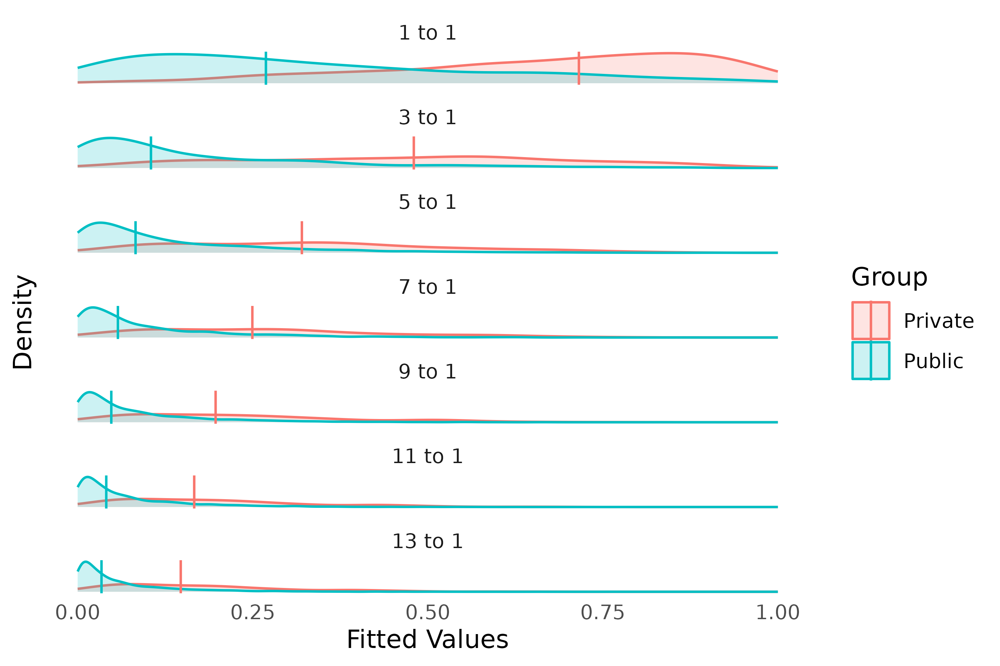

Introduction
Statistical modeling when there is substantial imbalance in the dependent variable poses unique challenges. In these situations models often favor the majority class. Two common approaches are upsampling and downsampling. Upsampling is the process of increasing the sampling of the minority group to more closely match the size of the majority group. Conversely, downsampling involves sampling from the majority group to more closely match the size of the minority group. The latter is generally not preferred since it artificially increases the sample size (i.e. n) resulting in decreasing the standard error estimates.1 This paper introduces an approach where multiple logistic regression models are estimated using the minority group and a unique subset of the majority group such that all observations are majority observations are used in exactly one model while the minority group is reused across models. The final model pools the models using Rubin’s Rules defined within the context of multiple imputation (Rubin, 2004).
Impact on Fitted Values
In the United States there are broadly two types of schools, public
and private. Public schools are funded by property taxes whereas
privates schools charge tuition to the families. The Programme for
International Student Assessment (PISA) is an international
evaluation managed by the OECD. It measures how well 15-year-old
students apply their knowledge and problem-solving skills in reading,
mathematics, and science to real-world challenges. PISA samples students
from both public and private schools within the United States. The
medley package contains a subset of the PISA data for the
United States containing 5233 observations of 44 variables. There are
4888 public school students and 345 private school students (6.59%)
To exemplify the problem with estimating logistic regression with imbalanced data, let’s consider several models where the ratio of public-to-private schools varies from 1-to-1 to 14-to-1. Figure @ref(fig:shrinkingvalues) represents the distributions of the fitted values from a logistic regression with varying ratios of public-to-private schools. That is, all private school students were used in every model. For the 1-to-1 model, the first 345 public school observations, then for the 2-to-1 model the first observations, etcetera until the final model uses all observations. The vertical lines correspond to the median fitted values. With all else equal, as the ratio of public-to-private schools increases, the range of fitted values shrinks towards the majority group.2

Distributions for varying public-to-private ratios. Vertical lines corrospond to the median of the fitted values.
References
Bryer, Jason M., “A national study comparing charter and traditional public schools using propensity score analysis” (2014). Legacy Theses & Dissertations (2009 - 2024). 1090. https://doi.org/10.54014/H2BR-2XKN
Rubin DB. Multiple Imputation for Nonresponse in Surveys. New York: John Wiley and Sons; 2004.